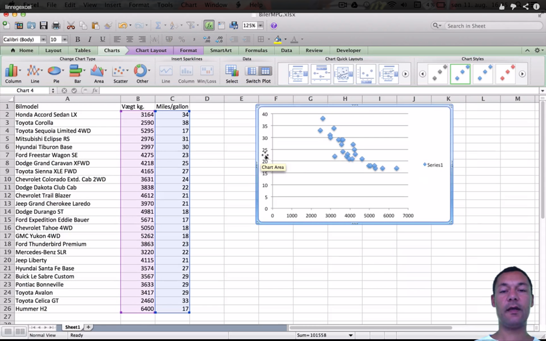
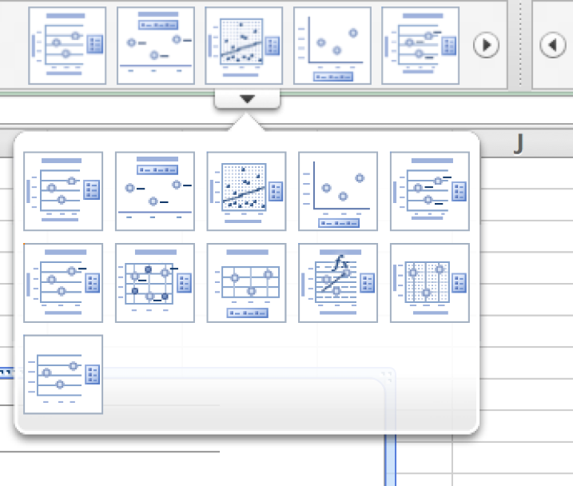
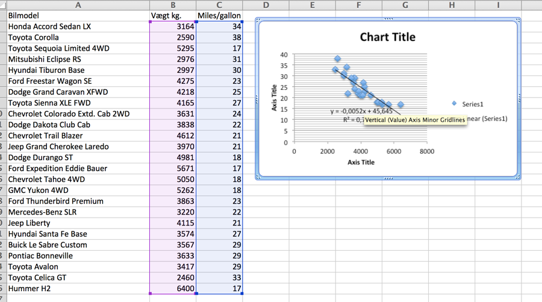
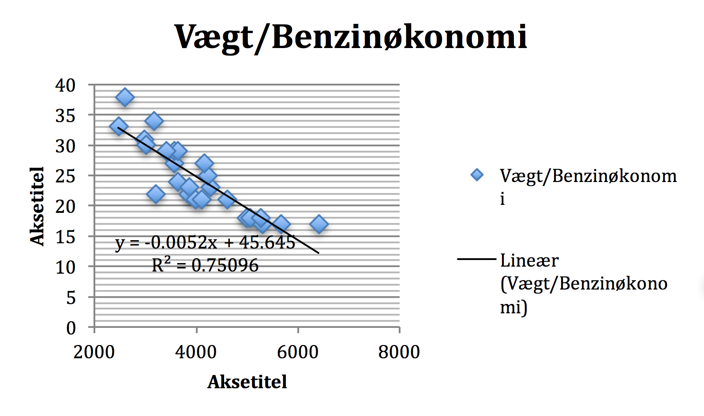
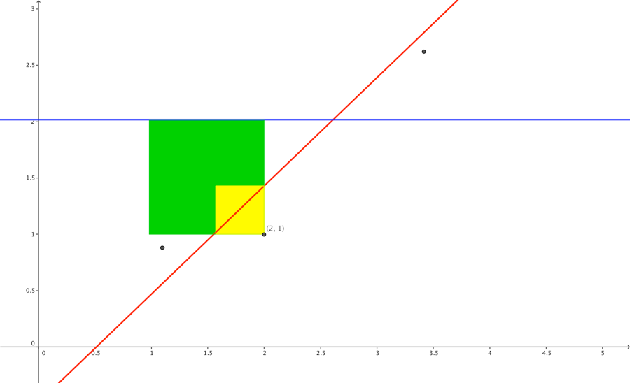
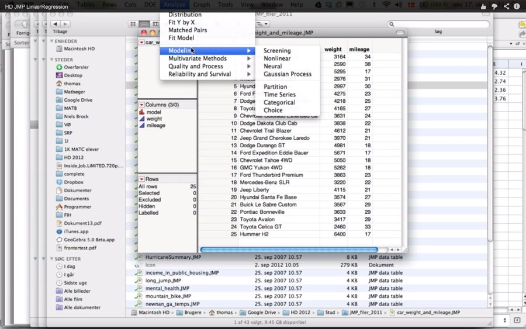

Kapitel 18 Excel Lineær regression
18.0.1 Video excel lineær regression

Hvis man har et observationssæt med observerede x og y værdier, kunne man have en formodning om at der er en lineær sammenhæng mellem variablene. I nedenstående eksempel[^5] har man indsamlet data om forskellige bilers vægt og benzinøkonomi. En mile er 1,6 kilometer, en gallon er 3,8 liter, dvs en Hyundai kører
\[\frac{1,6 \cdot 30}{3,78} \approx 12,7\ km/l\ \]
| Bilmodel | Vægt kg. | Miles/gallon |
|---|---|---|
| Honda Accord Sedan LX | 3164 | 34 |
| Toyota Corolla | 2590 | 38 |
| Toyota Sequoia Limited 4WD | 5295 | 17 |
| Mitsubishi Eclipse RS | 2976 | 31 |
| Hyundai Tiburon Base | 2997 | 30 |
| Ford Freestar Wagon SE | 4275 | 23 |
| Dodge Grand Caravan XFWD | 4218 | 25 |
| Toyota Sienna XLE FWD | 4165 | 27 |
| Chevrolet Colorado Extd. Cab 2WD | 3631 | 24 |
| Dodge Dakota Club Cab | 3838 | 22 |
| Chevrolet Trail Blazer | 4612 | 21 |
| Jeep Grand Cherokee Laredo | 3970 | 21 |
| Dodge Durango ST | 4981 | 18 |
| Ford Expedition Eddie Bauer | 5671 | 17 |
| Chevrolet Tahoe 4WD | 5050 | 18 |
| GMC Yukon 4WD | 5262 | 18 |
| Ford Thunderbird Premium | 3863 | 23 |
| Mercedes-Benz SLR | 3220 | 22 |
| Jeep Liberty | 4115 | 21 |
| Hyundai Santa Fe Base | 3574 | 27 |
| Buick Le Sabre Custom | 3567 | 29 |
| Pontiac Bonneville | 3633 | 29 |
| Toyota Avalon | 3417 | 29 |
| Toyota Celica GT | 2460 | 33 |
| Hummer H2 | 6400 | 17 |
Man kunne have en formodning om at jo tungere en bil var, desto færre miles kører den på en gallon. Det virker naturligt at påstå at benzinøkonomi i en eller anden grad afhænger af vægt. Derfor vil vi antage at x-værdierne skal være vægt, og at benzinøkonomien y’erne, er en funktion af vægten. Man kan klikke på billedet nedenfor og hente filen fra google docs.
Er der en lineær sammenhæng og hvor udtalt er denne?
Man sætter data ind i excel → lyser hhv. x-værdi og y-værdi søjlerne op. Husk x-værdien skal stå først. → vælger fanen Charts → vælger Scatter → nu har man et plot af punkterne → Vælg Chart Quick Layouts → Vælg Layout 9 (se billede nedenfor eller screencast )

Nu skulle man gerne have en plot som nedenfor:

Hvis man skal ændre f.eks. x-akse skalaen stiller man sig på et x-akse tal i Excel plottet → højreklikker → Format Axis → Vælg Scale → ret f.eks. minimum til 2000 → Ok
Man kan direkte copy paste plottet ind i et worddokument som nedenfor. Linjen i plottet kaldes regressionslinjen. Den viser at der er en negativ sammenhæng mellem vægt og benzinøkonomi da hældningen -0.0052 er negativ. Det fortæller os at ifølge modellen (Det kalder vi regressionslinjen), vil en forøgelse af vægten på 1 kilo betyde at man kører 0,0052 miles kortere på en gallon. Det er måske mere meningsfuldt, at gange begge størrelser med 1000, så kan man sige at for hvert ton bilvægten forøges kører bilen 5,2 miles kortere på en gallon. Interceptet hvilket betyder skæringen med y-aksen 45,645 har ikke betydning. Vi kan kun udtale os om biler indenfor det vægtspænd, vi har observeret, vi kan ikke sige noget om biler der vejer 0 kilo.

Hvordan er linjen beregnet ? Regressionslinjen er dannet på baggrund af mindste kvadraters metode, det betyder denne linje minimerer den lodrette afstand mellem punkterne og linjen ( i vil høre meget mere om dette i statistik ). Hvor godt beskriver bilvægten benzinøkonomien. Målet for dette er \(R^{2} = 0,75\), det betyder at 75% af variationen i benzinøkonomien forklares ud fra bilernes vægt. Jo bedre modellen forklarer variationen i benzinøkonomien jo tættere på 1 dvs. 100% vil \(R^{2}\) komme. Hvis der ingen sammenhæng mellem vægt og benzinøkonomi var, ville man bedst kunne beskrive benzinøkonomien for bilerne ved gennemsnittet af deres forbrug. Man ville altså have en regressionslinje der lå vandret.
\(\text{SS}_{\text{res}}\) sums og squares residual angiver summen de lodrette kvadrerede afstande til regressionslinjen.
\(\text{SS}_{\text{tot}}\) sums og squares total angiver summen de lodrette kvadrerede afstande til denne vandrette gennemsnitslinje.
I tegningen nedenfor er en regressionslinje (den røde linje), modelleret på baggrund af kun 3 observationer. For observationen (2,1) er dens bidrag til sums og squares residual arealet af den gule firkant, det er den lodrette afstand til den røde regressionslinje i anden. For observationen (2,1) er dens bidrag til sums og squares total arealet af den grønne firkant, det er den lodrette afstand til den blå y gennemsnitslinje i anden. Den blå linje ville være bedst til at beskrive y-værdierne hvis der ikke er nogen lineær sammenhæng. I denne simple tegning ville \(\text{SS}_{\text{res}}\) altså være summen af 3 gule arealer, de 3 punkter vil danne. \(\text{SS}_{\text{tot}}\) vil være summen af de 3 grønne arealer.
\[R^{2} = 1 - \frac{\text{SS}_{\text{res}}}{\text{SS}_{\text{tot}}} = 1 - \frac{\text{Gul\ sum}}{Gron\ sum}\]
Når \(\text{SS}_{\text{res}}\) gul sum er lille i forhold \(\text{SS}_{\text{tot}}\) grøn sum er \(R^{2}\) tæt på 1, bemærk \(\text{SS}_{\text{res}}\) kan ikke blive større end \(\text{SS}_{\text{tot}},\\)dvs. \(R^{2}\) kan ikke blive mindre end nul.

Man kan i excel prøve at rette i observationerne, og se hvordan \(R^{2}\) ændrer sig.
18.0.2 Video JMP regressionseksempel
